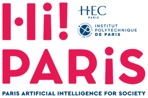

Funding
I am grateful for the many organization and taxpayers who have supported me through my academic career.
-
My current position at ENPC is funded by the Hi! PARIS center and the French Agence nationale de la recherche (ANR) as part of the France 2030 program.

- My postdoc at EPFL was supported, in large part, by the Swiss State Secretariat for Education, Research, and Innovation (SERI).
- My doctoral work at Georgia Tech was supported, in large part, by the U.S. National Science Foundation.